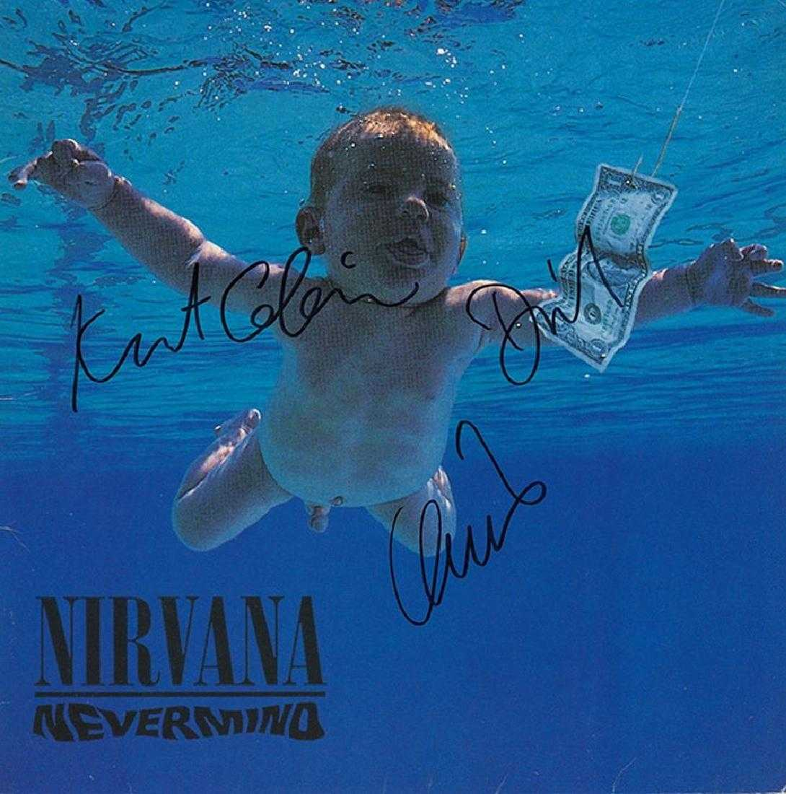
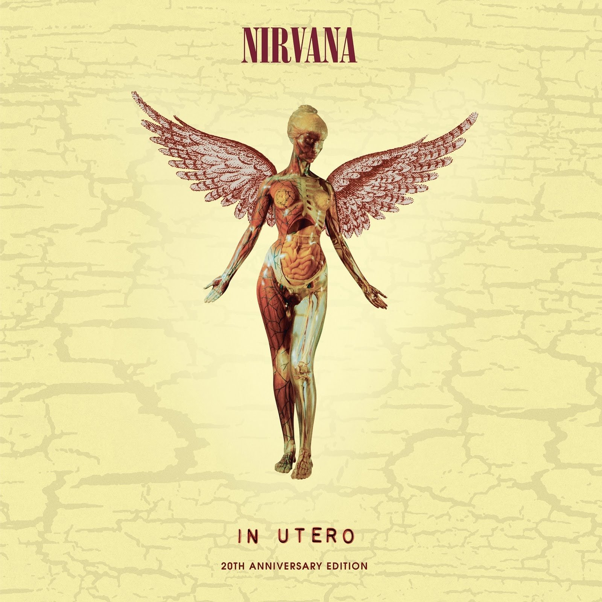
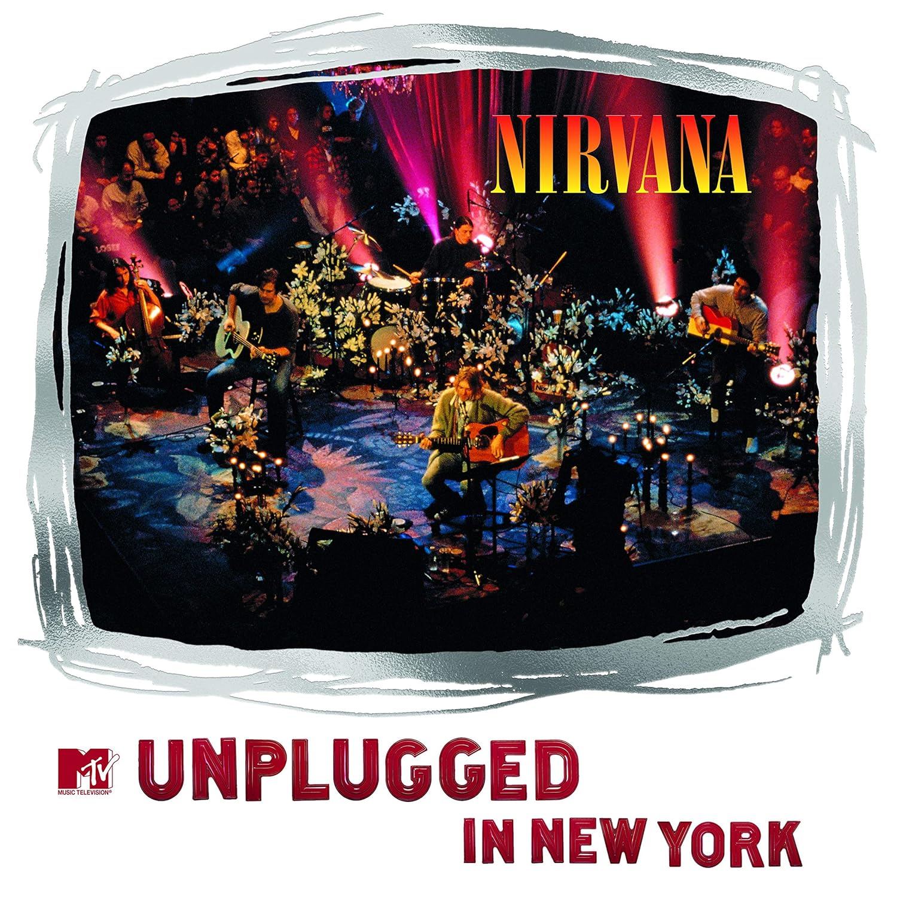

Kurt Cobain foi o vocalista do Nirvana, uma banda icônica dos anos 90. Ele nasceu em 1967 e cresceu em Aberdeen, Washington. Com o Nirvana, ele ajudou a popularizar o movimento grunge e alcançou enorme sucesso com o álbum "Nevermind". Cobain lutou contra problemas de saúde mental e vício em drogas ao longo de sua vida. Sua morte em 1994, aos 27 anos, deixou uma marca duradoura na música e na cultura popular. Ele é lembrado por sua música cativante e por seu papel na cena musical alternativa.

Nevermind
Uma das mais tocadas do álbum, Smells Like Teen Spirit

In Utero
Uma das mais tocadas do álbum, Heart-Shaped Box

MTV Unplugged in New York
Uma das mais tocadas do álbum, About a Girl